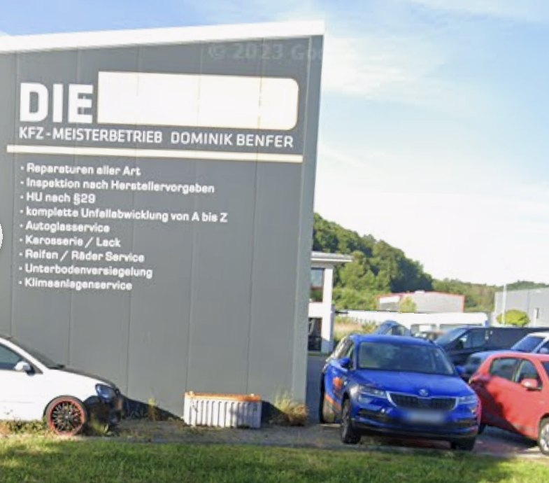

Inspektion & Wartung
Inspektion nach Herstellervorgaben – mit Original- oder gleichwertigen Teilen, damit die Garantie erhalten bleibt.
Freier Meisterbetrieb an der Großen Brenne. Wir suchen den Fehler, bevor wir Teile bestellen – und sagen Ihnen vorher, was die Sache kostet. Inspektion, HU, Bremsen, Klima, Karosserie, Unfallabwicklung: alles in einer Halle.
 Große Brenne 5 · 58099 Hagen
Große Brenne 5 · 58099 Hagen
Vom Ölwechsel bis zum Blechschaden. Sie müssen nicht drei Betriebe anfahren – Diagnose, Reparatur, Karosserie und die Abwicklung mit der Versicherung laufen bei uns über einen Tisch.
Inspektion nach Herstellervorgaben – mit Original- oder gleichwertigen Teilen, damit die Garantie erhalten bleibt.
Hauptuntersuchung bei uns im Haus. Wir prüfen vorab, bringen Mängel in Ordnung und melden das Fahrzeug zur Abnahme an.
Motordiagnose per Auslesegerät und Messung – erst suchen, dann schrauben. Sie erfahren vorher, was es kostet.
Beläge, Scheiben, Leitungen, Handbremse. Sicherheitsrelevant – deshalb ohne Kompromiss beim Material.
Klimaservice mit Desinfektion, Dichtheitsprüfung und Befüllung – für R134a und R1234yf.
Komplette Unfallabwicklung von A bis Z: Gutachter, Versicherung, Reparatur, Terminplanung – wir übernehmen den Schriftkram.
Wer an der Großen Brenne vorbeifährt, liest es direkt an der Halle. Genau diese Arbeiten machen wir – seit Jahren, mit demselben Meister im Betrieb.

Große Brenne 5 · HallenwandKurz schildern, was das Auto macht. Wir sagen Ihnen am Telefon, wann wir Zeit haben.
Fehlerspeicher, Sichtprüfung, Messung. Wir suchen die Ursache, nicht nur das Symptom.
Sie erfahren, was die Reparatur kostet, bevor wir anfangen. Geschraubt wird erst nach Ihrer Freigabe.
Wir rufen an, sobald der Wagen fertig ist. Rechnung nachvollziehbar, Altteile auf Wunsch zurück.
Unverändert übernommen aus den Google-Bewertungen zu „Die Werkstatt“, Hagen.
Mit Abstand die beste Werkstatt im Umkreis. Kompetentes Team und schnelle treffende Fehlerdiagnose, was uns schon viel Geld und Zeit gespart hat! Habe absolutes Vertrauen und kann das Unternehmen und diesen Chef nur wärmstens weiterempfehlen.
Google-Rezension
Bis jetzt eine gute Werkstatt, hat den Termin eingehalten und auch sehr nett zu anderen Kunde. Soll heißen als ich dort war kam eine Frau rein an deren Auto vorne eine Birne nicht funktionierte. Das Pärchen war auf dem Weg in den Urlaub. Diese wurde direkt gewechselt ohne zu murren.
Google-Rezension
Schon mehrmals dort gewesen. Alles Top immer wieder. Faire Preise und immer sehr schnell nen Termin bekommen.
Google-Rezension
Ein absolut super Ablauf, vom Telefonat, der Annahme, der Rückruf Abholbereitschaft, die Ausführung der Arbeiten und zum Schluss ein tolles Preis/Leistungsverhältnis. War das 1. mal auf Empfehlung dort, sicherlich nicht das letzte mal. Toll zu wissen!
Google-Rezension
Echt gute Werkstatt! Sind schnell und machen sehr gute Arbeit. Sie versuchen, wenn möglich, erst Bauteile zu reparieren anstatt gleich neue zu bestellen. Das findet man nicht mehr oft. Super Werkstatt!
Google-Rezension
Für mich gibt es keine andere Werkstatt mehr. Ich werde dort immer nett empfangen und beraten. Die Preise stimmen und die Reparaturen sind immer 1A. Herr Benfer gibt sich besonders viel Mühe, um seine Kunden zufrieden zu stellen. Diese Werkstatt kann ich nur wärmstens empfehlen.
Google-Rezension
Habe wirklich sehr gute Erfahrungen mit „Die Werkstatt“ gemacht. Die Beratung und der Service waren ausgesprochen gut. Die Preise und der Arbeitsaufwand gerechtfertigt. Eine Werkstatt, die man wirklich weiterempfehlen kann! Vielen Dank.
Google-Rezension
Zwischen 12:30 und 13:30 Uhr ist Mittagspause – da erreichen Sie uns telefonisch nicht. Samstags ist die Halle zu.
| Montag | 08:00–12:30 · 13:30–17:30 |
|---|---|
| Dienstag | 08:00–12:30 · 13:30–17:30 |
| Mittwoch | 08:00–12:30 · 13:30–17:30 |
| Donnerstag | 08:00–12:30 · 13:30–17:30 |
| Freitag | 08:00–12:30 · 13:30–15:30 |
| Samstag | geschlossen |
| Sonntag | geschlossen |
Kurzfristig etwas kaputt? Rufen Sie trotzdem an. Für Kleinigkeiten wie eine defekte Birne findet sich meistens eine Lücke.
Lieber schriftlich? Schicken Sie uns Fahrzeug und Problem – wir melden uns mit einem Terminvorschlag zurück.
Am schnellsten geht es am Telefon – wir sagen Ihnen direkt, wann wir Zeit haben und was uns die Sache kosten dürfte.